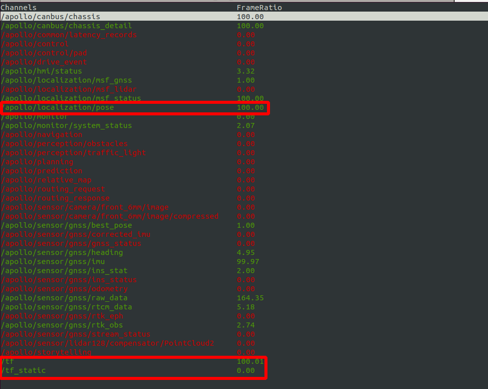
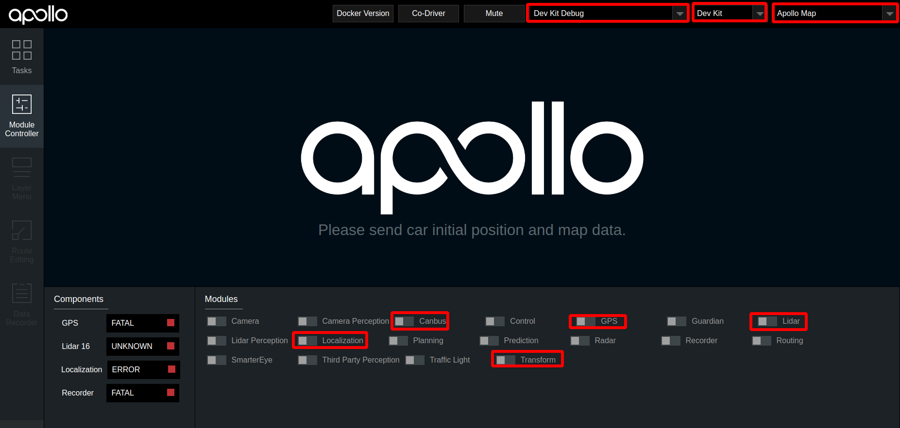
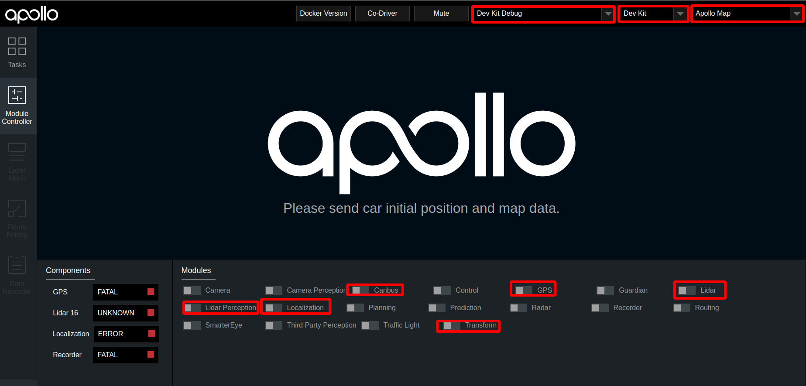

基于激光雷达的封闭园区自动驾驶搭建–感知适配¶
概览¶
该用户手册旨在帮助用户完成激光雷达感知适配，实现Lidar感知
前提条件¶
正确完成了循迹搭建–车辆循迹演示
配置文件的修改¶
序号 |
待修改文件 |
修改内容 |
|---|---|---|
1 |
|
添加 |
启动Lidar感知¶
把车辆开到户外，启动lidar感知
1. 启动can卡¶
进入can卡目录启动can卡，用以下命令启动
cd ~/SocketCan/
bash start.sh
2. 编译项目，启动Dreamview¶
进入docker环境，用gpu编译项目，启动DreamView
cd /apollo
bash docker/scripts/dev_start.sh
bash docker/scripts/dev_into.sh
bash apollo.sh build_opt_gpu
bash scripts/bootstrap.sh
3. 启动所需模块¶
在浏览器中打开
(http://localhost:8888)，选择模式为Dev Kit Debug， 根据车辆铭牌信息选择对应的车型(详情见下表)，在Module Controller标签页启动Canbus、GPS、Localization、Transform模块。铭牌信息
车型选择
Apollo D-KIT Lite
dev_kit
Apollo D-KIT Standard
dev_kit_standard
Apollo D-KIT Advanced(NE-S)
dev_kit_advanced_ne-s
Apollo D-KIT Advanced(SNE-R)
dev_kit_advanced_sne-r

定位模块启动后，需要接收定位数据，需要等待约1分钟左右。打开新的终端，并使用
bash docker/scripts/dev_into.sh命令进入docker环境，在新终端中输入cyber_monitor命令查看tf、tf_static、/apollo/localization/pose数据，这三个数据在cyber_monitor中均显示为绿色代表定位模块启动成功 在dreamview中启动
lidar模块
4. 检查lidar数据是否正确¶
使用
cyber_monitor，查看激光雷达相关channel是否正常输出，并使用上下方向键选择channel，使用右方向键查看channel详细数据。(关于cyber_monitor更详细使用，请参考CyberRT_Developer_Tools)单激光雷达用户用户，请检查如下channel是否正常输出
序号
channel
帧率
1
/apollo/sensor/lidar16/PointCloud210Hz
2
/apollo/sensor/lidar16/Scan10Hz
3
/apollo/sensor/lidar16/compensator/PointCloud210Hz

三激光雷达用户用户，请检查如下channel是否正常输出
序号
channel
帧率
1
/apollo/sensor/lidar16/back/PointCloud210Hz
2
/apollo/sensor/lidar16/left/PointCloud210Hz
3
/apollo/sensor/lidar16/right/PointCloud210Hz
4
/apollo/sensor/lidar16/fusion/PointCloud210HZ
5
/apollo/sensor/lidar16/compensator/PointCloud210Hz
5. 启动Lidar感知¶
在dreamview中启动lidar perception模块，使用cyber_monitor查看/apollo/perception/obstacles是否正常输出，并在dreamview上查看障碍物信息：

验证Lidar感知效果¶
查看车前方10米处运动的人或者自行车（自行车上要有人），在DreamView上查看障碍物颜色以及位置速度信息（自行车青蓝色，行人黄色，车辆绿色），如下图所示：

/apollo/perception/obstacles的数据如下图所示：


如果在dreamview上能看到障碍物并且/apollo/perception/obstacles有障碍物信息，则开环测试通过。
NEXT¶
现在，您已经完成激光雷达感知适配，接下来可以开始封闭园区自动驾驶搭建–规划适配
常见问题¶
1. 感知的输出帧率达不到10帧¶
建议使用
bash apollo.sh build_opt_gpu编译Apollo工程
2. 感知的障碍物位置与实际障碍物误差较大¶
确认localization信号状态，保证
/apollo/sensor/gnss/best_pose中sol_type选项显示为NARROW_INT保证各个传感器外参文件准确